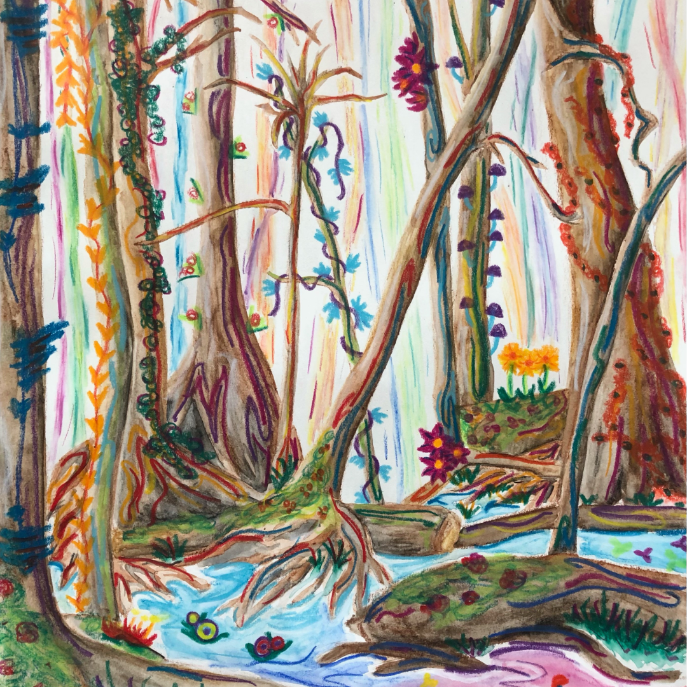
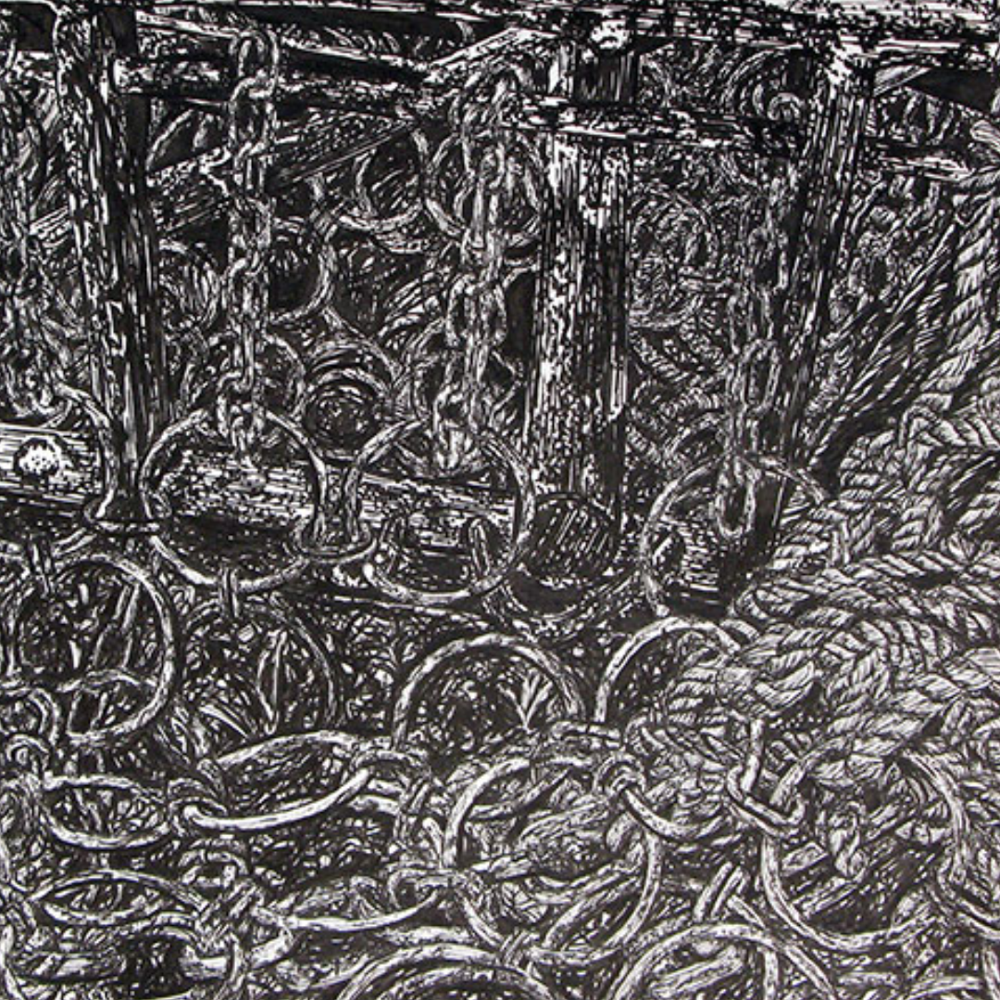

Fantasy Forest >>
Nature meets imagination

Trajectories >>
It's the journey

Monochromatic Expanses >>
Dramatic lights and shadows

Pen & Ink >>
Oriented to detail

Miscellaneous >>
Drawings destined for independence